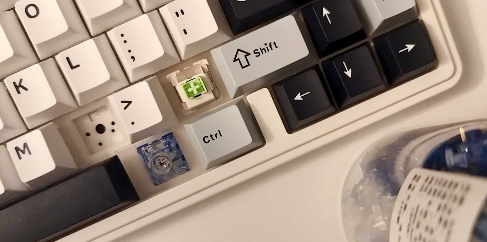
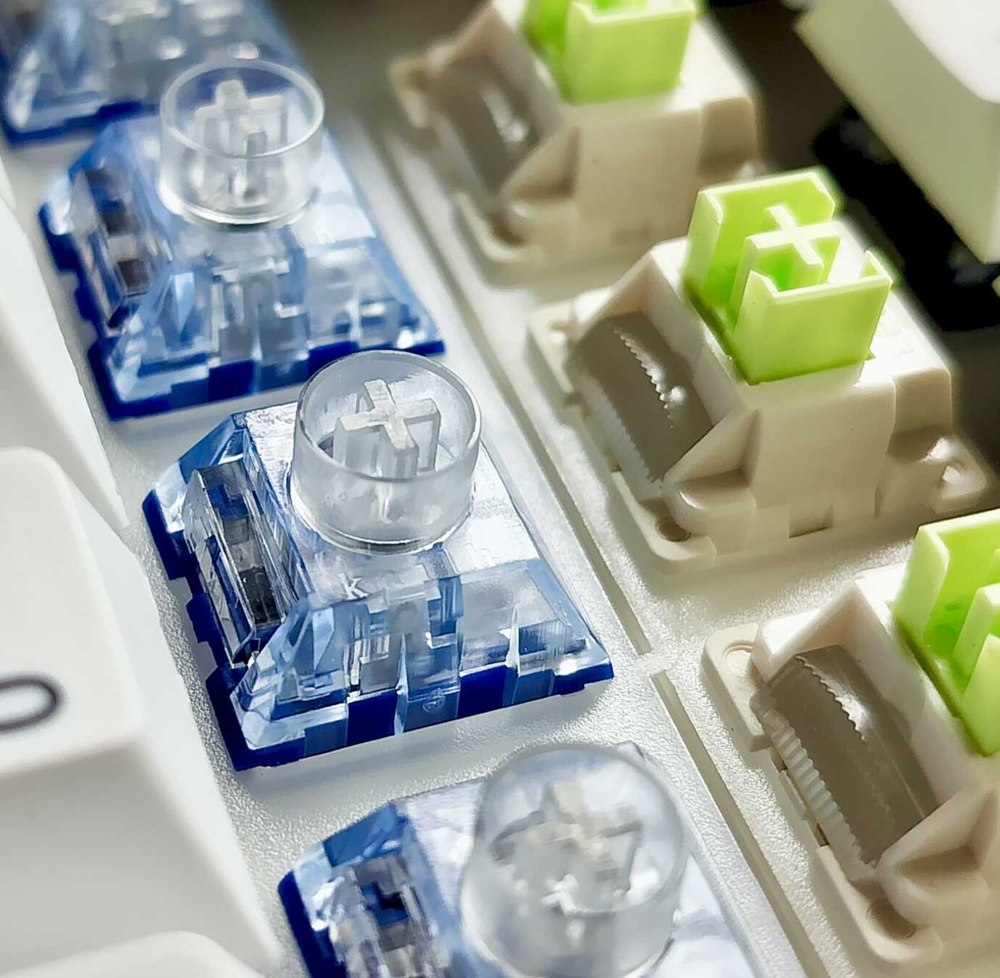
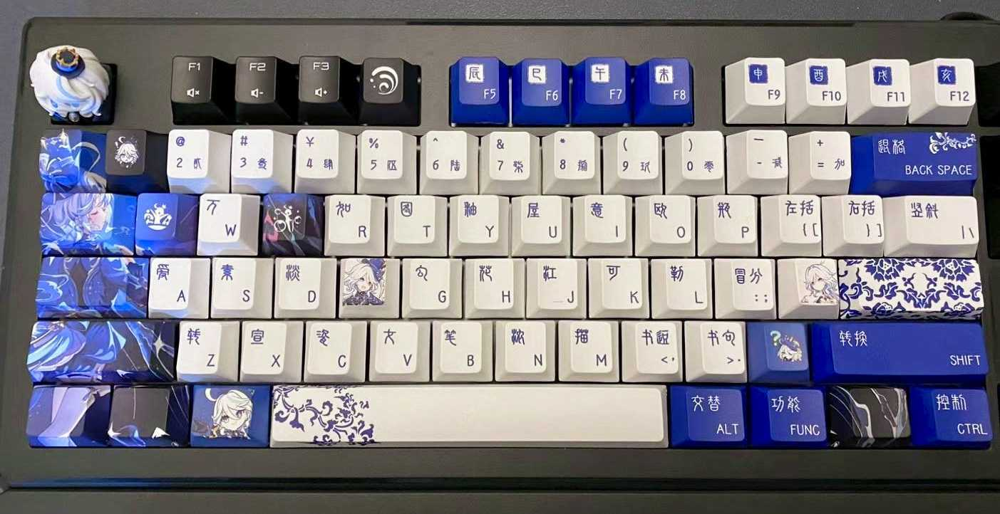

sheng: Non-rhotic "shern"; followed by qi: "chee" (like in "cheek"), or "ち" if you know Japanese -- would be good enough an approximation of my given name, sheng-qi. If you'd prefer even more precision, the IPA would look something like /ʈ͡ʂú ʂəŋ̂ t͡ɕʰǐ/.
(Footnote: "g" is silent, and serves as the marker of nasalized "n", just like "ng" in "ring".
The qi sound is also written as ch'i under Wade-Giles.)
Most of the time I stay at home in a less busy corner of Ithaca, and (try to) relax in the serenity a bit. In my leisure time I (unfortunately) still spend much time with computers and screens, and you might find me happily wasting an entire afternoon on these things:
(Unsurprisingly) I have spent a significant amount of my relax hours playing games!
PC: Here are some wonderful games I've been playing recently:
Baldur's Gate 3 -- yes, the 4 of us from 3 time zones, after 2 full years, still haven't finished our 1st run 😭
AI LIMIT 无限机兵
Star★Vaders
Library Of Ruina
枪豆人
Gacha: Much of my time and passion is given to Zenless Zone Zero and Project Sekai. Check out these adorable clips if you haven't heard of them :D
I enjoy customizing my keyboards, and it's really fun to play with key caps and hot-swappables. Here are some photos of my current keyboards!



I play clarinet. It's a hobby that I picked up again in Ithaca, after playing it for 5+ years as a kid and then putting it aside after middle school.
I have worked on the (informal) translation and localization for fellow linguistic learners and students. Most recently, I am also seeking to become a Wikipedia contributor, focusing on the localization of English entries to Chinese.
Kayaking has been one of one major hobbies that supported my well-being back in Seattle, although Ithaca does not have as much to offer :(
About my website
This website originated from a static instance of the academic-homepage template, with significant amounts of customization incorporated to fit my own vibes. That is, edits are directly made on the generated HTML/CSS/JS source code after Jekyll building the original site, and thus Jekyll is no longer used in this version. If you would like to use it as reference/source code, you are welcome to! Just be aware that the editing could potentially be a lot more tedious without the help of Jekyll.
The "profile picture" is a lovely miniature of Azusawa Kohane from Project Sekai. (So cute!)
The color theme of the site features
#7799CC and
#7777AA, the character color of Togawa Sakiko and Shiina Taki from Bang Dream! Girls Band Party.